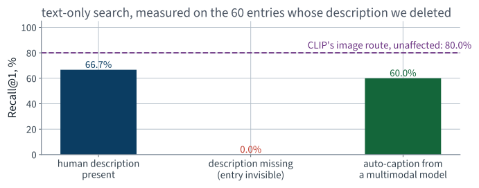
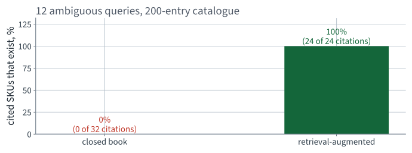
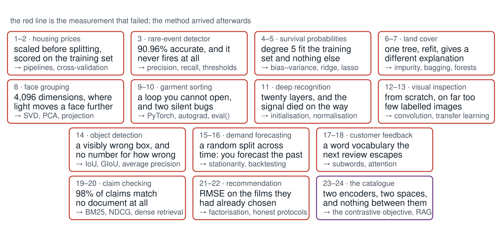

COCO and the Part V corpora
Lecture 24 Géron Ch. 15–16
Applications of Machine Learning
BSc Mathematics of Artificial Intelligence · Third year
Lecture 23 built a catalogue you can search with a sentence. Two weak spots remain, and both are about entries rather than about the model:
The first repair
20 minutes
60 of 200 catalogue entries have no description. A text index cannot rank a document that does not exist, so those entries score exactly 0% — structurally, not statistically.
| Component | What it is |
|---|---|
| Image encoder | a vision transformer — Chapter 16 |
| Text decoder | a transformer decoder with cross-attention to the image — Chapter 15 |
| Training | image–caption pairs, next-token prediction |
| Size | 224 million parameters |
Architecturally this is the encoder–decoder of Chapter 15 with an image encoder in place of the text one. Nothing new; a different pair of modalities in the same box.
from transformers import BlipForConditionalGeneration, BlipProcessor
proc = BlipProcessor.from_pretrained("Salesforce/blip-image-captioning-base")
cap = BlipForConditionalGeneration.from_pretrained(
"Salesforce/blip-image-captioning-base").to(device).eval()
with torch.no_grad():
batch = proc(images=missing_images, return_tensors="pt").to(device)
ids = cap.generate(**batch, max_new_tokens=30, num_beams=3)
generated = proc.batch_decode(ids, skip_special_tokens=True)
assert len(generated) == len(missing_images)
Expected wall clock: 21 s for 60 images with beam search. Not instant; run it offline, once, per new entry.
| Human description (deleted) | Generated description |
|---|---|
| This wire metal rack holds several pairs of shoes and sandals | a dog laying on top of a pair of shoes |
| A green vase filed with red roses sitting on top of table. | a vase of flowers sitting on a window sie |
| A giraffe bending over while standing on green grass. | the gi is brown and white |
The first row is the interesting one: both sentences are true. There is a dog asleep on the shoe rack, and the two writers chose different subjects. The third row is not a sentence at all.

From 0% to 61.7% on the 60 affected entries — against 66.7% if a person had written them.
| Text-only route, all 200 queries | R@1 | R@10 |
|---|---|---|
| Every entry described by a person | 61.5% | 96.0% |
| 60 entries with nothing | 46.0% | 68.5% |
| Those 60 auto-captioned | 62.0% | 94.0% |
At rank 1 the recovery is complete to within one query out of 200 — which is noise, not a win over the human writers. At rank 10 it is not complete, and that gap is the real finding.
| On the same 60 entries | R@1 |
|---|---|
| Text index, description deleted | 0% |
| Text index, auto-captioned | 61.7% |
| Joint-space image route | 80.0% |
A multimodal model conditioned on an image, generating text. Architecturally it is Lecture 18’s decoder with cross-attention into Lecture 23’s image encoder — nothing new, arranged differently.
So the honest use is narrow and worth stating: fill holes, mark the filled entries as machine-written, and measure retrieval with and without them.
A generator’s output depends on how you ask, and the difference is often larger than the difference between models.
Report the prompt with the result. A number without the prompt that produced it is not reproducible, and prompts are rarely written down because they do not feel like code.
That last point is the honest closing note of the technical half of this course. Every lecture until now had a number. Here you have to construct the number first, and constructing it well is most of the work.
For the first time in this course, the number you committed to was probably too low rather than too high — because the failure this time was not in the evaluation. It was in the geometry, and the repair was somebody else’s pretraining run.
| # | Measured last lecture | Number |
|---|---|---|
| 1 | Text search R@1 on entries with no description | 0% |
| 2 | Ambiguous queries with a single right answer | none exist |
The first is a hole in the index. The second is a mismatch between what the customer asked and what a ranked list can say.
Both are repaired in the next thirty minutes, and both are re-measured before we leave.
The second repair
25 minutes · examinable
| Good at | Bad at | |
|---|---|---|
| Retriever | finding the right entries, fast, over millions | saying anything; it only ranks |
| Generator | fluent answers, synthesis across entries | knowing anything reliably; it will produce a plausible answer regardless |
Each covers the other’s weakness, which is why the combination is worth more than either. It is also why the failures are interesting: they belong to neither half.
Evaluating the retriever alone (recall@k) and the generator alone (fluency) can both look excellent while the system does all three. The join needs its own measurement.
Before anything is retrieved, the corpus must be cut into units. That choice is upstream of the retriever and of the generator, and it is usually made without measurement.
It is a hyperparameter. Treat it as one: vary it, hold everything else fixed, and measure recall@k on the same judgements — Lecture 19’s protocol, unchanged.
$k$ trades two failures against each other.
| Small $k$ | Large $k$ |
|---|---|
| the right entry may not be there at all | it is there, buried among distractors |
| the generator cannot recover | the generator may attend to the wrong one |
A ranked list of pictures is a poor answer to any of these. The customer wants a shortlist with reasons — and a ranking has no place to put a reason.
Twelve such queries, written by hand and listed in the notebook. There is no dataset of ambiguous queries; inventing them and saying so is the honest option.
Option A
Show the top ten pictures and let the customer decide. That is what we already have, and it is why they asked in words.
Option B
Ask a language model. It has never seen our catalogue, so anything it recommends is invented — and it will invent it fluently.
Retrieval-augmented generation is the composition of the two: retrieve first, then generate strictly from what was retrieved.
“The answer is good” is not measurable in a lecture. So give every entry a stock number and require the assistant to cite them:
This measures grounding, not helpfulness. Say which one you measured; they are not the same thing and only one of them is cheap.
q = unit(clip_text(["something to sit on"])) # (1, 512)
top5 = np.argsort(-(q @ I.T)[0])[:5] # I: catalogue images
shortlist = "\n".join(f"- {cat[j]['sku']}: {cat[j]['captions'][0]}"
for j in top5)
prompt = (f'Here are the catalogue entries our search returned for '
f'"something to sit on":\n{shortlist}\n\n'
f'Recommend the best ones, citing only SKUs from the list above. '
f'If none fit, say so.')
answer = generate(prompt) # a 0.5B instruction model
cited = re.findall(r"CAT-\d{6}", answer)
print(f"{sum(s in valid_skus for s in cited)}/{len(cited)} cited SKUs exist")
The failure is not that it refuses. It is that it does not refuse, and nothing in the output distinguishes an invented SKU from a real one.

0% of closed-book citations exist against 100% when the shortlist is in the prompt — over 12 queries and a 200-entry catalogue.
| Over 12 ambiguous queries | Closed book | Retrieval-augmented |
|---|---|---|
| Queries that cited at least one SKU | 10 | 12 |
| Citations emitted | 32 | 24 |
| Citations that exist | 0 | 24 |
| Grounding rate | 0% | 100% |
The generator is a 494-million parameter instruction model, chosen so the whole thing runs on a laptop. A larger one would follow the citation instruction more reliably; it would not change the shape of the result.
| Route | Before | After |
|---|---|---|
| Text query → image, joint space | 72.5% | 72.5% (untouched) |
| Text index, on the entries with no description | 0% | 61.7% |
| Ambiguous queries, grounding rate | 0% | 100% |
Two repairs, two measured deltas, one number deliberately unchanged as a control. That last row is what makes the other two believable.
The last twenty-five minutes
25 minutes
Every method in this course arrived because something measurable could not be done without it.
That was a claim, not a plan. Here is the evidence.
Every method you met in this course was introduced at the moment a number you produced was wrong without it.
Not “was useful”. Not “is standard”. Was wrong, and measurably so, and you were the one holding the wrong number.
The rest of this block is that claim, once for each application, with the measurement attached every time.

Read the middle line of each box. That is the syllabus — the chapter order is a consequence of it.
| Lecture | The derivation | Where it came back |
|---|---|---|
| 2 · end-to-end | least squares, the normal equation | ridge in 5; collinearity everywhere |
| 3 · classification | imbalance; precision is not monotone | the maximum inside AP, Lecture 14 |
| 4 · training models | gradient descent | every network from Lecture 9 on |
| 5 · regularisation | bias–variance | every learning curve since |
| 6, 7 · trees, ensembles | impurity; variance of a correlated average | multi-head attention, Lecture 18 |
| 8 · PCA | SVD; Johnson–Lindenstrauss | matrix factorisation in 21; the sphere in 23 |
| Lecture | The derivation | Where it came back |
|---|---|---|
| 9 · networks | what a layer computes | everything after it |
| 10 · PyTorch | reverse-mode autodiff | why training is affordable at all |
| 11 · deep training | variance propagation | BPTT in 16; residuals in 18 |
| 12 · convolution | weight sharing, equivariance, memory | what a ViT gives up, Lecture 23 |
| 14 · detection | IoU; mAP | ranking metrics in 19 |
| 15 · time series | stationarity; autocorrelation | causal masking in 18 |
| 17 · text | softmax, cross-entropy, logits | attention's softmax in 18; the contrastive loss in 23 |
| 18 · attention | scaled dot-product attention | Part V's encoders, and 23 |
| Lecture | The derivation | The point |
|---|---|---|
| 19 · lexical IR | MRR, AP, NDCG | a ranking is not a classification, and needs its own metrics |
| 20 · dense IR | — | two encoders and an inner product; the negatives are most of the work |
| 21 · matrix factorisation | low rank, and its relation to the SVD | Lecture 8, with missing entries |
| 22 · neural recsys | — | the two-tower model IS the bi-encoder; and offline evaluation is where recsys is usually wrong |
| 23 · multimodal | contrastive objective, temperature | the same two towers, different modalities |
Lectures 20, 22 and 23 are three uses of one object. That is the strongest single thread in the course, and it is why Part V sits after transformers rather than before.
Forty per cent of the written paper, and the part of this course with the longest shelf life.
| Failure | First met | Measured cost |
|---|---|---|
| Fitting before splitting | Lecture 2 | nothing measurable — and unknowable in advance |
| Evaluating on training data | Lecture 2 | an RMSE of zero |
| Accuracy under imbalance | Lecture 3 | a useless model above 90% |
| Choosing on the test set | Lectures 2, 5 | an optimistic report, every time |
Missing zero_grad() | Lecture 10 | 76.7 points |
| Default initialisation, deep | Lecture 11 | a network that does not train at all |
| Random split on a series | Lecture 15 | optimistic, and undeployable |
| Augmenting the validation set | Lecture 13 | 1.57 points of noise on the criterion |
Not one of them raises an exception. That is the whole reason the course is organised around measurement.
| Detection on 128 COCO images | Value |
|---|---|
| Objects miscounted per image, at the 0.5 reporting threshold | 3.0 |
| ...at the threshold that minimises error on these same images | 1.92 — a diagnostic, not a result |
| mAP at IoU 0.5 | 0.659 |
| mAP averaged over IoU 0.5 to 0.95 | 0.439 |
| The same detections, averaged per image | 0.817 |
The last row is the same detections as the third, both at IoU 0.5. Averaging over images instead of over classes moves that headline by 0.157 — a mean of a mean is not a mean. Against the stricter 0.5:0.95 row directly above it the apparent gap is 0.378, and that one is not a comparison at all: the two rows are averaged over different thresholds.
| Same model, same rows, different protocol | MAE |
|---|---|
| Random cross-validation split | 44,925 |
| Honest, time-ordered split | 56,446 |
| Optimism from shuffling time | 25.6% |
Nothing was fitted on the test set. No preprocessing crossed the split. The leak was the ordering, and with positive autocorrelation a point’s own near-future was in its training set.
| Failure | Met in | Where it recurs |
|---|---|---|
| Leakage from fitting before splitting | L2 | any target encoding, oversampling, feature selection or imputation done on the full frame |
| Accuracy under imbalance | L3 | fraud, medical screening, click prediction, defect detection — anywhere the interesting class is rare |
| Variance mistaken for signal | L6, L8 | a single-seed comparison; a leaderboard whose top ten are within noise of each other |
| Signal vanishing with depth | L11 | any deep stack without residual connections or normalisation, including very long sequences |
| The wrong metric | L19, L14, L23 | a ranked list scored with accuracy; a detector scored without IoU; a recall quoted without its candidate set |
| Temporal leakage | L15, L22 | any user-level split where the same user appears in both halves; any shuffled panel data |
| It runs, and produces a plausible number | Diagnosed in |
|---|---|
| Scaler fitted before the split | L2 |
| Evaluating on training data | L2 |
| Accuracy under class imbalance | L3 |
| Hyperparameters chosen on the test set | L2, L5, and again on a prompt template in L23 |
Missing model.eval() / optimizer.zero_grad() | L10 |
| Metric averaged per batch, not over the set | L10 |
| Random split on an autocorrelated series | L15 |
| Embeddings compared without normalising | L23 |
Every row of that table runs to completion. Not one of them raises.
Five rules, no mathematics, and they would have caught every failure in the table two slides ago.
| Block | Why it is there |
|---|---|
| Where we are | so a lecture you missed is recoverable |
| The derivation | because the method does not make sense without it, and it outlasts the libraries |
| The method, with a worked example | real numbers from real data, reproducible from the repository |
| Failure conditions | stated as properties, never sprung as traps |
| The notebook | complete, correct, and printing every figure the slides state |
Every number on every slide of this course is produced by a script in the repository, and every figure a slide states is one its own notebook prints. Both are checked mechanically.
| California housing | regression, and a target with a cap in it |
| MNIST | a rare event carved out of a balanced corpus |
| Titanic | small, mixed types, and a real need for probabilities |
| CoverType | large enough that trees and ensembles differ |
| Olivetti | more dimensions than samples |
| Fashion-MNIST, CIFAR-10 | networks, then deep networks |
| Flowers102 | too few labels to train from scratch |
| COCO | several objects per image, and captions |
| Chicago transit | ordered rows, and strong seasonality |
| IMDb | free text |
| SciFact, MovieLens | ranking, and implicit feedback |
Being explicit
and where those gaps sit
Because “I took a machine learning course” is read by other people as a claim about what you can do. You should be able to say precisely what it does and does not mean.
Named so you know they exist and roughly where they sit. None is examinable, and each is a course.
Drift
Every number in this course was measured on data drawn like the training data. In production that stops being true, gradually and without warning, and the score you reported at launch is the last honest one anybody has.
Monitor the inputs, not just the outputs: the distribution moves before the accuracy does.
Who it is worse for
Lecture 2 sliced the error by district and found the poorest tenth predicted worst. That slice was one line of code, and it is the difference between a system you can defend and one you cannot.
The habit generalises: always ask for whom the average is wrong.
| Topic | Where it sits |
|---|---|
| Autoencoders, GANs, diffusion models | generation rather than prediction; the same encoders, a different objective |
| Reinforcement learning | learning from a reward signal instead of labelled examples — a different problem class entirely |
| Training and serving at scale | data pipelines, distributed training, deployment |
Nothing above is examinable. All three are the natural next chapters of the same book, and you now have the vocabulary for them.
| Topic | Why it matters, in one line |
|---|---|
| Causal inference | every model here answers “what is associated with what”; deciding an intervention needs different assumptions and different data |
| Uncertainty quantification | we produced one confidence interval, in Lecture 2. Calibrated predictive uncertainty is its own subject |
| Fairness and harm | we ran one fairness check. Who a system fails, and what that costs them, is not a metric you can pick off a list |
| Privacy | differential privacy, federated learning, and what a model memorises about its training data |
| Monitoring and drift | a model is fitted once and lives for years. Detecting that the world moved is a permanent job |
| Experimental design | an offline metric improving is not a business improving. That is an A/B test, and it is a statistics problem |
Question 3 caught a crash in Lecture 23. Question 5 caught two assistant failures in two consecutive lectures. They keep working.
Rule 2 did the most work this application: the difference between “cosine 0.006” and “cosine 0.006, against 0.003 for unrelated pairs” is the whole of Lecture 23.
Six steps. Nothing in them is specific to a library, and none of them will be out of date in ten years.
You will build most of this with an assistant, and Lecture 1 set out how: specify, generate, read, test, verify — and steps three to five are yours.
The code was never the scarce part. Knowing whether to believe the output is, and that is what these twenty-four lectures were for.
Written — two hours, closed book
Oral — optional, seven to ten minutes
The written is marked out of 30, pass at 18, capped at 27 on its own; the oral moves it by at most ±3 and cannot turn a pass into a fail. Everything in Chapters 1–16 and in the Part V notes is examinable; nothing marked engineering or for context is.
The libraries in these notebooks will be superseded. The derivations will not, and neither will the habit of asking what a number was measured on.
01 · What machine learning is, and how we will work
03 · Classification and its metrics
05 · Regularisation and the bias–variance trade-off
07 · Ensembles and random forests
08 · Dimensionality reduction and unsupervised learning
09 · Neural networks, from the perceptron up
14 · Detection and segmentation
18 · Attention and transformers
19 · Information retrieval: the lexical foundation
20 · Information retrieval: dense retrieval
21 · Recommender systems: from ratings to factors
22 · Recommender systems: neural, and evaluated honestly
23 · Vision transformers and multimodal retrieval
24 · Generation, retrieval-augmented systems, and where this leaves you
The full index of all twenty-four is on the course site. Every one of them is ours, written from a specification, in the lecture.
| Topic | Chapter |
|---|---|
| Softmax, cross-entropy, logits | 4, 15 |
| Transformer encoders and decoders; cross-attention | 15 |
| Vision transformers; text–image models; zero-shot | 16 |
| Image captioning | 16 |
| Random projection and concentration | 7 |
Retrieval-augmented generation, the modality gap, and the evaluation of generated answers are outside Chapters 1–16. They are here because the application needed them, and they are flagged as non-examinable.
Every failure in this course — the leak, the training score, accuracy under imbalance, the random split on a series, the augmented validation set, the ungrounded generated answer — is a case where that question had an answer nobody had asked for.
Asking it costs seconds. Not asking it has cost, in these twenty-four lectures alone, an RMSE of zero, a 90% classifier that never fires, a network that does not train, and a forecast of the past.
Not presented — for afterwards
five, in the style of the written paper
img @ txt.T / tau on the output of get_image_features. State the defect, and the assertion that would have caught it. [5]Solutions overleaf — there is no Lecture 25.
Solutions overleaf — there is no Lecture 25.
The five set at the end of Lecture 23
not part of this lecture
1. Two encoders are trained separately, one on images and one on text. Explain why their cosine similarity…
Any rotation of the image space leaves every image–image cosine and the image loss unchanged, while changing every image–text cosine.
2. In $d$ dimensions two independent random unit vectors have a cosine with standard deviation $1/\sqrt{d}$.…
Near zero, with a spread of about 0.044. There is exactly one point at cosine $-1$, so most pairs cannot be there.
3. A contrastive loss is computed at $\tau = 1$ on cosine scores. State why it barely trains, and what $\tau$…
Cosines span at most 2, so the softmax is nearly uniform. $\tau$ changes where the gradient goes, not which column is largest.
4. Recall@10 is reported over 200 candidates. State the exact random baseline, and why it is computed rather…
$10/200 = 5\%$.
5. An entry with no written description scores zero on a text retrieval route. State whether this is a ranking…
Structural — an entry with no text is not in a text index at all.
Answered here, because there is no Lecture 25
not part of this lecture
1. A contrastive loss is written as img @ txt.T / tau on the output of get_image_features. State the defect, and…
The features are not normalised, so the product is not a cosine. Assert every row has unit norm.
2. An auto-caption is generated for catalogue entries that have no description. State what it recovers, and the…
It recovers part of the lost recall. A caption that is wrong makes an entry findable under the wrong query.
3. A retrieval-augmented system is measured by whether cited stock numbers exist. State what that measures, and…
It measures grounding, not helpfulness.
4. In a retrieval-augmented pipeline the retriever's recall bounds the whole system. Explain why, and what that…
If the right entry is not retrieved, no generation recovers it.
5. Give the five rules the course ends on, and state the property the deck points out that all five share.
Split before anything is fitted; compute the trivial baseline first; two numbers measured on different rows are not comparable; a difference smaller than the spread is not a difference; change one thing. None of them is mathematics.
Applicazioni Informatiche del Machine Learning
Eighteen derivations · twenty-four notebooks · thirteen datasets
Every number on every slide reproduced by a script in the repository
Questions, and then the examination